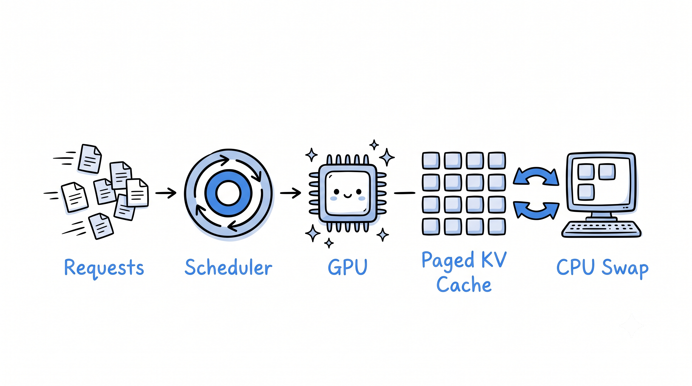

98.5%
TTFT reduction
"Can we eliminate prefill-blocking-decode stalls for optimal continuous batching?"
An 11-phase LLM serving engine implementing continuous batching, paged KV cache (block allocator + physical tensor pool), and chunked prefill. Cut mean TTFT under 4-way concurrent load by 98.5% (1,418ms → 20.9ms) and wall-clock latency by 26.5% vs. naive sequential serving.
Diagnosed: KV-cache pool-reconstruction bug adding 1.1ms/token overhead; fixed by keeping HuggingFace past_key_values live on-sequence during decode.
Continuous Batching
Paged KV Cache
Chunked Prefill